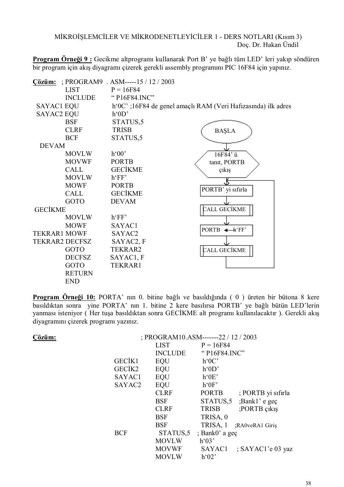
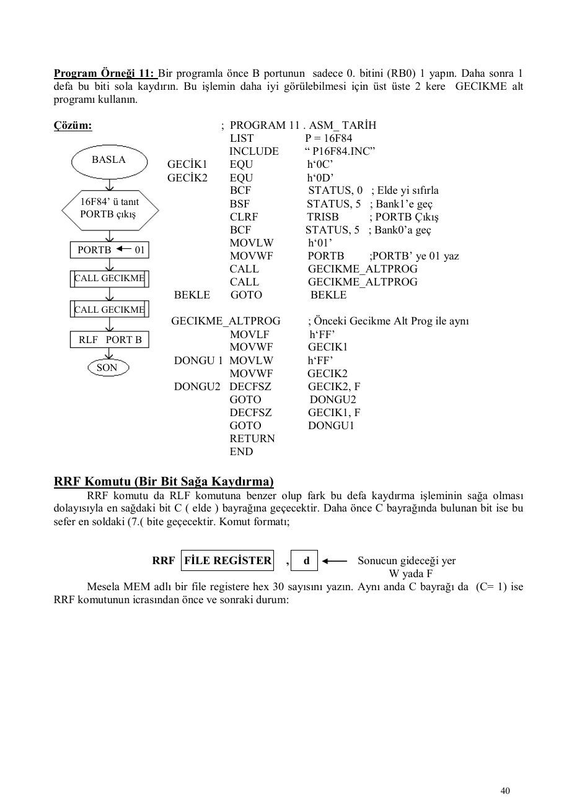
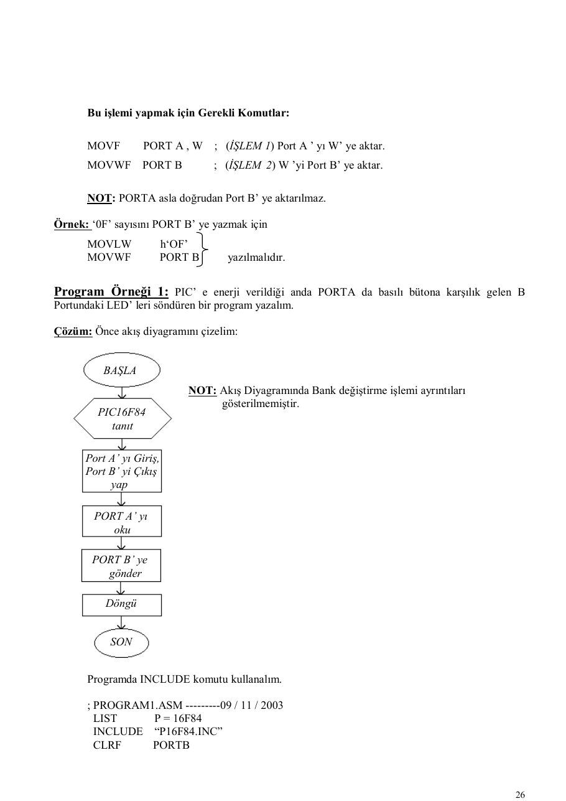
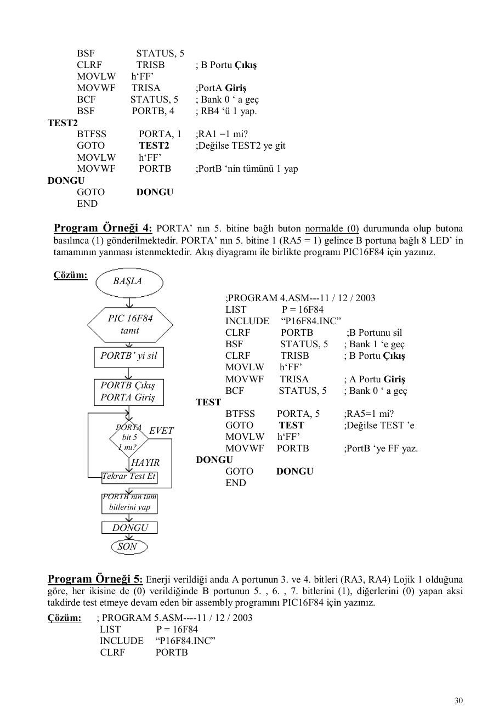

· EEM332
EEM332 Mikroişlemciler: PIC Programlama Örnekleri (Hakan Ündil)
EEM332 – Mikroişlemciler · 15.12.2003 · 18.10.2026
Bu yazı, Başkent Üniversitesi EEM332 Mikroişlemciler ders arşivindeki ilgili notları ve uygulamaları bir araya getiriyor (2003–2003). INCLUDE dosyaları, port ayarları, bit testi, LED ve gecikme alt programları. Kaynak: Doç. Dr. Hakan Ündil, Mikroişlemciler ve Mikrodenetleyiciler 1 ders notları, 2003. Belgelerin PDF arşiv kopyaları ve varsa kaynak kodları yazının sonunda ZIP olarak indirilebilir.
Bu içerik üçüncü taraf bir kaynağa aittir; arşiv ve nostalji amacıyla kaynak belirtilerek paylaşılmıştır. Hak sahibinin talebi hâlinde kaldırılır.
help2 (1)
MİKROİŞLEMCİLER VE MİKRODENETLEYİCİLER 1 - DERS NOTLARI (Kısım 3) Doç. Dr. Hakan Ündil
Program Örneği 9 : Gecikme altprogramı kullanarak Port B’ ye bağlı tüm LED’ leri yakıp söndüren bir program için akış diyagramı çizerek gerekli assembly programını PIC 16F84 için yapınız.
Çözüm: ; PROGRAM9 . ASM-----15 / 12 / 2003
LIST P = 16F84
INCLUDE “ P16F84.INC”
SAYAC1 EQU h‘0C’ ;16F84 de genel amaçlı RAM (Veri Hafızasında) ilk adres
SAYAC2 EQU h‘0D’
BSF STATUS,5
CLRF TRISB BAŞLA
BCF STATUS,5
DEVAM
MOVLW h‘00’ 16F84’ ü
MOVWF PORTB tanıt, PORTB
CALL GECİKME çıkış
MOVLW h‘FF’MOWF PORTB
PORTB’ yi sıfırla
CALL GECİKME
GOTO DEVAMGECİKME CALL GECİKME
MOVLW h‘FF’MOWF SAYAC1
PORTB h‘FF’
TEKRAR1 MOWF SAYAC2
TEKRAR2 DECFSZ SAYAC2, F
GOTO TEKRAR2 CALL GECİKME
DECFSZ SAYAC1, F
GOTO TEKRAR1
RETURN
ENDProgram Örneği 10: PORTA’ nın 0. bitine bağlı ve basıldığında ( 0 ) üreten bir bütona 8 kere basıldıktan sonra yine PORTA’ nın 1. bitine 2 kere basılırsa PORTB’ ye bağlı bütün LED’lerin yanması isteniyor ( Her tuşa basıldıktan sonra GECİKME alt programı kullanılacaktır ). Gerekli akış diyagramını çizerek programı yazınız.
Çözüm: ; PROGRAM10.ASM-------22 / 12 / 2003
LIST P = 16F84
INCLUDE “ P16F84.INC”
GECİK1 EQU h‘0C’
GECİK2 EQU h‘0D’
SAYAC1 EQU h‘0E’
SAYAC2 EQU h‘0F’
CLRF PORTB ; PORTB yi sıfırla
BSF STATUS,5 ;Bank1’ e geç
CLRF TRISB ;PORTB çıkış
BSF TRISA, 0
BSF TRISA, 1 ;RA0veRA1 Giriş
BCF STATUS,5 ; Bank0’ a geç
MOVLW h‘03’
MOVWF SAYAC1 ; SAYAC1’e 03 yaz
MOVLW h‘02’BAŞLA
MOVWF SAYAC2 ;SAYAC2’ye 02 yaz16F84’ ü tanıt TEKRAR BTFSC PORTA, 0 ; RA0 = 0 mı? A portu giriş GOTO TEKRAR ;Değilse TEKRAR’a B portu çıkış CALL GECİKME ;Evetse GECIKMEye
DECFSZ SAYAC1 ;SAYAC1’i 1 azaltSAYAC1 03 GOTO TEKRAR ; Sonuç 0 değilse SAYAC2 “ 02 DEVAM BTFSC PORTA, 1 ; RA1 = 0 mı?
GOTO DEVAM ; Değilse DEVAM’a
CALL GECİKME ;Evetse GECIKMEyeRA0 = 0 DECFSZ SAYAC2 ; SAYAC2’i 1 azalt HAYIR mı? GOTO DEVAM ;Sonuç 0 değilse EVET MOVLW h‘FF’
MOVWF PORTB ;PORTB’ye FF yükle
GECİKME
; GECİKME ALT PROGRAMI
GECİKMESAYAC1’i 1 azalt MOVLW h‘FF’
MOVWF GECİK1 ;GECIK1’e FF yükleDONGU1 MOVLW h‘FF’ SAYAC1 MOVWF GECİK2 ;GECIK2’ye FF yükle 0 mı? HAYIR DONGU2 DECFSZ GECIK2, F ; GECIK2’yi 1 azalt
GOTO DONGU2 ;Sonuç 0 değilseEVET DECFSZ GECİK1,F ;GECIK1’i 1 azalt RA1 = 0 GOTO DONGU1 ; DONGU1 ‘e git. HAYIR mı? RETURN ; Alt Programdan dön
END ; SON
GECİKMESAYAC2’yi 1 azalt
SAYAC2
0 mı? HAYIR
EVET
PORTB’ ye FF yaz
SON
LOJİK İŞLEM KOMUTLARI
RLF Komutu (Bir bit Sola Kaydırma)Bir file register içinde bulunan bitlerin birer bit sola kaydırılması işlemidir. Bu durumda en solda bulunan ( 7. bit ) C ( elde ) bayrağına geçmekte, daha önce C’ de bulunan bit ise en sağdaki ( 0.) bite geçmektedir. Komutun formatı;
RFL FİLE REGISTER , d W yada F ( Sonucun Yeri )
Komutu şematik gösterirsek;
Program Örneği 11: Bir programla önce B portunun sadece 0. bitini (RB0) 1 yapın. Daha sonra 1 defa bu biti sola kaydırın. Bu işlemin daha iyi görülebilmesi için üst üste 2 kere GECIKME alt programı kullanın.
Çözüm: ; PROGRAM 11 . ASM_ TARİH
LIST P = 16F84
INCLUDE “ P16F84.INC”
BASLA
GECİK1 EQU h‘0C’
GECİK2 EQU h‘0D’
BCF STATUS, 0 ; Elde yi sıfırla16F84’ ü tanıt BSF STATUS, 5 ; Bank1’e geç PORTB çıkış CLRF TRISB ; PORTB Çıkış
BCF STATUS, 5 ; Bank0’a geç
MOVLW h‘01’PORTB 01
MOVWF PORTB ;PORTB’ ye 01 yaz
CALL GECIKME_ALTPROG
CALL GECIKME CALL GECIKME_ALTPROGBEKLE GOTO BEKLE
CALL GECIKMEGECIKME_ALTPROG ; Önceki Gecikme Alt Prog ile aynı
RLF PORT B
MOVLF h‘FF’
MOVWF GECIK1DONGU 1 MOVLW h‘FF’
SON
MOVWF GECIK2DONGU2 DECFSZ GECIK2, F
GOTO DONGU2
DECFSZ GECIK1, F
GOTO DONGU1
RETURN
ENDRRF Komutu (Bir Bit Sağa Kaydırma)
RRF komutu da RLF komutuna benzer olup fark bu defa kaydırma işleminin sağa olmasıdolayısıyla en sağdaki bit C ( elde ) bayrağına geçecektir. Daha önce C bayrağında bulunan bit ise bu sefer en soldaki (7.( bite geçecektir. Komut formatı;
RRF FİLE REGİSTER , d Sonucun gideceği yerW yada F Mesela MEM adlı bir file registere hex 30 sayısını yazın. Aynı anda C bayrağı da (C= 1) ise
RRF komutunun icrasından önce ve sonraki durum:Bu işlem için kullanılacak program komutları
MOVLW h‘49’ ; W Registerine (49)16 yükle
MOVWF MEM ; W ‘ yi MEM adresine sakla
RRF MEM, F ; MEM ’ i Sağa bir bit ötele.şeklinde olacaktır.
Program Örneği 12: Önce C bayrağını (1) yapın ve başlangıçta sıfırlanmış PORT B üzerinden birer bit sola kaydırın. Her kaydırma arasında GECIKME alt programına gönderin. C bayrağı tekrar ( 1 ) olunca programı bitirin.
NOT: GECIKME_ALTPROG Gösterilmeyecektir.Çözüm
; PROGRAM 12.ASM----------TarihBAŞLA INCLUDE “PIC16F84.INC”
BSF STATUS, 5 ; Bank1’e geç
CLRF TRISB ; PORTB Çıkış16F84’ ü tanıt BCF STATUS, 5 ; Bank0’ a geç PORTB çıkış KAYDIR
RLF PORTB ; PORTB yi sola kaydırC 1 CALL GECIKME_ALTPROG
BTFSS STATUS, 0 ; C bayrağı 1 mi?PORTB 00 GOTO KAYDIR ; Değilse KAYDIR’a
DONGU
RLF PORTB GOTO DONGU ; Evetse burada bekle
END
CALL GECIKMEC=1 mi?
SON
COMF ve SWAPF Komutları COMF komutu ile istenen bir file register içinde (0) lar (1) ve (1) ler (0) yapılabilir [1’ e göre tümleyen işlemi !.. ] . Komut formatı;
COMF FİLE REGİSTER , d Sonucun gideceği yer ( destination ) ( W yada F yazılır )
şeklindedir. Örnek: HAFIZA1 adlı registere ( 1F )16 yüklendikten sonra bunun tersi olan ( E0 )16 ’ ı HAFIZA2’ ye saklayın. Bunun için gerekli rutini (Program Parçasını) yazın.
Çözüm
HAFIZA1
0001 1111
MOVLW h‘0F’
MOVWF HAFIZA1 HAFIZA2COMF HAFIZA1, W
MOVWF HAFIZA2 1110 0000SWAPF komutu ise bir file register içindeki ilk dört bit (Yüksek anlamlı Nibble) ile son dörtbitlerin (Düşük anlamlı Nibble) yerlerini değiştirir. Komut formatı;
SWAPF FİLE REGİSTER , d şeklindedir.Örnek: PORTB’ ye ( 3F ) yazdıktan sonra ilk ve son bitlerin yerini değiştiren ve sonucu W ye yazan Program parçası yazın.
MOVLW h‘3F’
MOVWF PORTB
SWAPF PORTB, WANDLW KomutuW registerinin içeriğini sabit bir sayı ile Lojik AND (VE) işlemine tabi tutar. Sonucu tekrar W ’ye yazar. Bilindiği gibi işlemin sonunda her iki sayıda 1-1 olan bitler 1; diğerleri 0 olarak neticelenecektir. Komut formatı;
ANDLW Sabit sayı
şeklindedir.Bu komutla bir sayının ( veri ) istenen bitleri ( 0 ) yapılırken diğerleri olduğu gibi bırakılır. Bunun için sabit sayı ( maske ) seçilirken sıfır yapılmak istenenler ( 0 ), diğerleri ( 1 ) olarak seçilmelidir.
Örnek: W içinde (3C) sayısı olsun. Bu sayının 2.,3. ve 6. bitlerini (0) yapıp diğerlerini aynen bırakan komutu yazalım. Sonuçta sayı ne olur? Önce W deki sayıya hiç bakmadan 2.,3.,6. bitleri 0, öteki bitleri 1 olan bir maske seçelim. 7 6 5 4 3 2 1 0
1 0 1 1 0 0 1 1 = (B3)16
Bu maskeyle W deki sayıyı (3C yi) Lojik VE işlemine tabi tutmak için gerekli komut
ANDLW h’B3’ olacaktır.Sonucu bulmak için ise, W deki sayı (3C)16 verildiğine göre bu sayının 2.,3. ve 6. bitlerinin sıfırlanmış halini yazmamız gerekir. O da (30)16 olarak elde edilecektir. [ 3C de 6. bit zaten 0 olduğuna göre, 3C yi binary yazın ve 2. ve 3. bitlerini sıfırlayın]
ANDWF KomutuBu komut ANDLW komutuna benzer olup bu defa W ile herhangi bir file register arasında Lojik AND (ve) işlemi gerçekleştirilir. Sonuç ise ya W ‘ye ya da F ‘e yazılır. Komut formatı:
File Register
ANDWF ,d (Sonucun yeri, W ya da F)
şeklindedir.Örnek: PORTB registerinin içinde b’00101100’ sayısı olsun. W Registerine de b’11011111’ değerini (maske) yerleştirelim. Bu iki sayıyı Lojik AND işlemine tabi tutarak neticeyi yine PORTB ye yazalım.
Bunun için gerekli program parçası
MOVLW b’00101100’ ; W Registerine 2C yükle.
ANDWF PORTB , F ; PORTB ile W yi AND (VE) işlemine tabi tut
; ve sonucu yine PORTB ye yaz.IORLW Komutu Bu komut istenen bir biti 1 yapıp diğerlerini aynen bırakmak için kullanılır. Verilen sabit sayı ile W registeri Lojik OR (VEYA) işlemini yapar ve sonucu yine W registerine yazar. Komut Formatı:
IORLW Sabit sayı şeklindedir.
Bu amaçla seçilecek sabit sayıda (Maske’de), (1) yapılmak istenen bitler (1), değiştirilmesi istenmeyen bitler (0) seçilmelidir.
Örnek: W Registerinde bulunan sayının 5.,6.,7. bitleri 1 yapılıp diğer bitler aynen bırakılmak istensin. Önce Maskemizi seçelim; 7 6 5 4 3 2 1 0
1 1 1 0 0 0 0 0 = E0 (Sayıda 1 yapılacak bitler 1)
Bu durumda gerekli program parçası (komut)
IORLW b’1110 0000’ olacaktır.
NOT: Maske seçimi işlemi için W da bulunan sayının bilinmesine gerek yoktur. Hangi sıradakibitlerin (burada 5,6,7 idi) 1 yapılacağının bilinmesi yeterlidir. Soruda “sayı W dadır” denildiği için program parçasında W ‘ya yükleme komutuna ihtiyaç yoktur.
Örnek: Yukarıdaki örnekte W daki sayımız (04)16 olsaydı sonuç ne olurdu?
W ile Maske arasında OR işlemi: (sonuç E4 olacaktır) Bit No: 7 6 5 4 3 2 1 0 W Reg. 0 0 0 0 0 1 0 0 Maske 1 1 1 0 0 0 0 0 Sonuç 1 1 1 0 0 1 0 0
IORWF Komutu Bu komut da IORLW komutuna benzer olup fark, maskenin sabit sayı yerine bir file registerde bulunmuş olmasından ibarettir. Sonuç ise ister W ‘ye , ister File Register ’a yazılabilir.
Komut Formatı
IORWF File Register , d (Sonucun yeri, W ya da F)
XORLW Komutu Bu komut ise W Registeri ile verilen sabit sayı arasında EXOR ( Özel VEYA) işlemi gerçekleştirerek
sonucu W ‘ye yazar. Komut Formatı
XORLW Sabit Sayı şeklindedir.
Bu komut da W Registerde bulunan 8 bitlik sayının istenen bitlerinin tersini almak diğer bitleri aynen bırakmak için kullanılabilir. Bu maksatla belirlenecek Maske baytında tersi alınmak istenen bitler (1), diğerleri (0) seçilmelidir.
Örnek: Önce W ‘ya (3B)16 sayısını yükledikten sonra bu sayının sadece 1. , 3. , 5. , 7. bitlerinin tersini alıp neticeyi PORTA ya yazmak için gerekli komutları verin. Bu durumda sonuç ne olur?
MOVLW h ‘3B’ ;W ye 3b yazXORLW b’10101010’ ; maskede 7,5,3,1. bitler 1, yapıldı
MOVWF PORTA ; Sonuç PORTA ya yazıldı.W ile sabit sayı arasında (EXOR işlemi) Bit No: 7 6 5 4 3 2 1 0 W Reg.de(3B) 0 0 1 1 1 0 1 1 Maske (AA) 1 0 1 0 1 0 1 0 Sonuç (91) 1 0 0 1 0 0 0 1
XORWF Komutu Bu komut da XORLW komutuna benzer olup burada asıl sayı W registerde, maske ise file registerde bulunur. İşlem sırası önemli olmadığı için maskeyi W’ya asıl sayıyı File Registere yazmak da mümkündür.
NOT: XORLW ve XORWF iki tane 8 bitlik sayının aynı olup olmadıklarını test etmek içinkullanılabilir. Sayılar aynı ise EXOR lanınca sonuç (00)16 olacağından Z bayrağı (1) olacaktır. Aksi takdirde Z bayrağı (0) kalacaktır. [ Z bayrağının STATUS ‘un 2. biti olduğunu hatırlayın]
Örnek: PORTA da bulunan bir baytlık sayı (09)16 dan farklı ise A Portu test edilmeye devam edilecek, (09)16 ‘a eşit ise bu sayı PORTB ‘ye yazılsın isteniyor. Gerekli Program Parçası:
MOVLW h’09’
TESTXORWF PORTA,W ; W ile PortA ya Lojik EXOR işlemi uygula
BTFSS STATUS,2 ; Z bayrağı 1 mi?
GOTO TEST ; Değilse TEST ‘e git
MOVF PORTA , W ; Evetse PortA yı W ye aktar.
MOVWF PORTB ; W yi PortB ye yaz.Mesela, PORTA ya gelen sayı (07)16 olsa ve (09)16 ile XORWF işlemi yapıldığında;
0000 0111 (07) 0000 1001 (09) 0000 1110 (0E) Sonuç 0 ‘dan farklı olduğuna göre test etmeye devam et.
Benzer şekilde bir baytlık veriyi sıfır sayısı ile karşılaştırmak için IORLW ve IORWF komutları kullanılabilir.
Örnek: PORTA daki sayının (00)16 olup olmadığını test eden, sıfır ise ILERI adresine atlayan aksi takdirde test etmeye devam eden bir program parçasını IOR türü bir komutla yazın.
TEST
MOVF PORTA ,W ; PortA yı W ye kopyala (yaz)IORLW h’00’ ; W ile 00 arasında Lojik VEYA uygula
BTFSS STATUS , 2 ; Sonuç=0 mı ( Z=1 mi?)
GOTO TEST ; Değilse TEST ‘e git
GOTO ILERI ; Evetse ILERI adresine git.Program Örneği 13 : PORTA nın bütün bitleri normalde (1) iken PORTA da 0,1,2. bitlerin (RA0,RA1,RA2) hepsine basılınca PORTB ye (0F)16 yükleyen aksi halde test etmeye devam eden bir program için akış diyagramı çizerek assembly programı yazınız. Maske: 0001 1000 [ilk 3 bit(0) PORTA da yok, son üç bit(0) test edilecek]
; PROGRAM13.ASM-------TARİH
LIST P=16F84
INCLUDE “P16F84.INC”
CLRF PORTB
BSF STATUS,5
MOVLW h’FF’
MOVWF TRISA ;PortA Giriş
CLRF TRISB ;PortB Çıkış
BCF STATUS,5 ;Bank0 a geç
TEST
MOVLW b’00011000’ ;Maskeyi W yeXORWF PORTA,W ;PortA ile EXOR
BTFSS STATUS,2 ; Z bayrağı 1 mi?
GOTO TEST ;Değilse TEST e
MOVLW h’0F’ ;Evetse W ‘ ye 0F yaz
MOVWF PORTB ; PortB ye aktar
ENDÇEŞİTLİ ÖRNEKLER
1) PORTA ‘nın 0. bitine (RA0) Lojik 0 uygulanarak enerji verilen bir PIC16F84’e daha sonra
PORTA ‘nın tamamına (FF)16 uygulanırsa PORTB nin tüm bitleri (1) yapılacak aksi takdirde PORTA
test edilmeye devam edilecektir. Akış diyagramı çizerek gerekli assembly programını yazınız.
; ORNEK1.ASM
LIST P=16F84
INCLUDE “P16F84.INC”
CLRF PORTB
BSF STATUS,5
MOVLW h’FF’
MOVWF TRISA
CLRF TRISB
BCF STATUS,5
TEST
BTFSC PORTA,0 ; RA0=0 mı?
GOTO TEST ; Değilse TEST’e
BEKLEXORWF PORTA,W ; W ile PORTA aynı mı?
BTFSS STATUS,2 ; Z bayrağı 1 mi?
GOTO BEKLE ; Değilse BEKLE ’ye
MOVLW h’FF’
MOVWF PORTB ; Aynıysa PORTB ye FF yaz
END ; Son2) PORTA nın 1. bitine (RA1) 2 kere üstüste bir Lojik devreden (0) uygulandığı takdirde W
Registerine (01)16 yazıp son bulan bir program yazınız. Tuşa basılmalar arasında 10 tane NOP komutunun yaklaşık 255 defa icrası ile elde edilecektir. Gecikmeden hemen sonra ikinci (0) işareti gelmediği halde test işlemine baştan başlanacaktır. (Yani, yeniden iki (0) beklenecektir, Gecikme için Alt Program kullanılmayacaktır.) Gerekli assembly programını yazınız.
;ORNEK2.ASM
LIST P=16F84
INCLUDE “P16F84.INC”
SAYAC EQU h’0C’ ; SAYAC için 1 bayt yer ayır.
BSF STATUS,5 ; Bank1 ‘e geç
MOVLW h’FF’
MOVWF TRISA ; PORTA yı Giriş yap
BCF STATUS,5 ; Bank0 ‘a geç
TEST
BTFSC PORTA,1 ; RA1=0 mı?
GOTO TEST ; Değilse TEST ‘e git
MOVLW h’FF’ ; Evetse W ‘ye FF yükle
MOVWF SAYAC ; Sayaca W deki FF sayısını yaz
GECIKME
NOP
NOP
NOP
.. .
NOP ; 10 tane NOP komutu
DECFSZ SAYAC,F ; Sayacı 1 azalt
GOTO GECIKME ; SAYAC sıfırdan farklıysa GECIKME’ye
BTFSC PORTA,1 ; SAYAC sıfırsa, tekrar RA1=0 mı? bak
GOTO TEST ; Değilse TEST ‘e git, yeniden iki 0 bekle
MOVLW h’01’ ; İstenen (01) sayısını W ‘ye yükle
END ; Son3) PORTA ‘da bulunan 8 bitlik (1 baytlık) sayı 2 kere sola ötelendikten sonra ortaya çıkan sayı
(6C)16 ise PORTB ‘ye (01) ; aksi takdirde yine PORTB ‘ye (02) yazan bir programı assembly dilinde yazınız.
NOT: Başlangıçta C bayrağı (0) yapılacaktır.;ORNEK3.ASM
LIST P=16F84
INCLUDE “P16F84.INC”
BSF STATUS,5
MOVLW h’FF’
MOVWF TRISA ; PortA Giriş
CLRF TRISB ; PortB Çıkış
BCF STATUS,5 ; Bank0 ‘a geç
BCF STATUS,0 ; C Bayrağı sıfır yapıldı.
RLF PORTA,F ; PortA ‘yı 1 bit sola ötele
RLF PORTA,F ; PortA ‘yı 1 bit (kere daha) sola ötele
MOVLW h’FF’ ; W registerine FF yükleXORWF PORTA,W ; W deki (FF) ile PortA daki sayı aynı mı?
BTFSS STATUS,2 ; Z bayrağı 1 ise bir satır atla.
GOTO GIT ; Değilse GIT etiketine git.
MOVLW h’01’YAZ MOVWF PORTB ; PortB ye (01) yaz
GOTO SON ; SON etiketine git.GIT MOVLW h’02’
MOVWF PORTB ; PortB ye (02) yazSON END
KAYNAKLAR
1- Mikroişlemciler Ders Notları 1 - 2 (6502) , Doç. Dr. Hakan ÜNDİL 2- Mikrodenetleyiciler ve PIC Programlama, Orhan ALTINBAŞ 3- Adım Adım PIC Programlama, Yaşar BODUR 4- PIC Microcontroller Uygulama Devreleri, Gökhan DİNÇER 5- PIC16F8X, Microchip PIC Data Sheet, (www.microchip.com)


help3
MİKROİŞLEMCİLER VE MİKRODENETLEYİCİLER 1 - DERS NOTLARI (Kısım 2) Doç. Dr. Hakan Ündil
INCLUDE DosyalarAssembly programlarını yazarken kullanılacak register adreslerini (EQU) komutu ile tanımlamak hem kolaylık sağlamakta hem de anlaşılırlığı arttırmakta idi. Ancak her sefer bu tanımları tekrar tekrar yapmak gereksiz gibidir. Bunun yerine Include Dosya kullanarak aynı isimli her PIC için sabit olan bu tanımları her programda yeniden yapmaktan kurtulmuş oluruz. Mesela; P16F84.INC dosyası PIC16F84 için gerekli tanımları içerir ve MPASM klasörü içinde ( .asm) dosyamızla aynı yerde bulunmalıdır. Include dosyası içinde Register adres tanımlarının yanı sıra RAM bölgesinin tanımı ve Konfigüration Bitleri denilen bazı bitlerin tarifi de yapılmaktadır. Programımız içinde Include Dosyası kullanabilmemiz için (PIC16F84 de) INCLUDE “P16F84.INC” satırını yazmamız yeterlidir.
Include dosya sayesinde (örneğin) STATUS registerinin her bir bitine isim verildiği için:BCF STATUS, 5 yerine
BCF STATUS, RP0 yazmak mümkündür. Aynı şeyler INTCON, OPTION gibi diğerregisterler içinde geçerlidir. Artık her File Register için kullanılan (EQU) komutları kalktığı için kaynak (assembly) programımız önemli ölçüde kısalıp sadeleşecektir. Sadece Genel Amaçlı RAM bölgesinde kullanacağımız bir değişken için (SAYAC gibi) EQU komutu yazmamız gerekebilecektir.
KONFİGÜRASYON BİTLERİ
Bu bitler PIC’ e gerilim verildiği anda geçerli kuralları belirlemek içindir. Mesela; PIC devremizin saatini (osilatörünü) RC tipi olarak kullanacaksak bunu programda bildirmemiz lazımdır. Benzer şekilde; Watchdog timer’ i devreye sokmak veya çıkarmak, Power-on Reset özelliğini devreye sokmak ya da çıkarmak, Kod korumayı devreye almak veya almamak için bu konfigürasyon bitleri kullanılır. Aslında konfigürasyon bitleri programa yazılmadan programlama esnasında da doğrudan belirlenebilir. Zira bütün programlayıcı programları bu imkanı vermektedir. Eğer program içersinde bir satır olarak Konfigürasyon Bitlerini vermek istersek bu komutun yazılışına ait bir örnek şöyle
verilebilir
_CONFIG _CP_ OFF & WDT_OFF & PWRTE_OFF & RC_OSC
Kod Komut Yok Watchdog Timer OFF Power-on Reset Yok Osilatör Tipi (RC)
& : “ve” demektir. _ : Alt çizgi boşluk yerine kullanılıyor. OFF : Yok, devre dışı anlamına gelir.
VERİ AKTARMA İŞLEMLERİ
PIC’ de veri aktarma (transfer) işlemleri W registeri üzerinden yapılmaktadır.
Örnek
İŞLEM 1 İŞLEM 2
W Reg.
PORTB
PORTA
Bu işlemi yapmak için Gerekli Komutlar
MOVF PORT A , W ; (İŞLEM 1) Port A ’ yı W’ ye aktar.
MOVWF PORT B ; (İŞLEM 2) W ’yi Port B’ ye aktar.NOT: PORTA asla doğrudan Port B’ ye aktarılmaz.Örnek: ‘0F’ sayısını PORT B’ ye yazmak için
MOVLW h‘OF’
MOVWF PORT B yazılmalıdır.Program Örneği 1: PIC’ e enerji verildiği anda PORTA da basılı bütona karşılık gelen B Portundaki LED’ leri söndüren bir program yazalım.
Çözüm: Önce akış diyagramını çizelim
BAŞLA
NOT: Akış Diyagramında Bank değiştirme işlemi ayrıntıları
gösterilmemiştir.
PIC16F84
tanıtPort A’ yı Giriş, Port B’ yi Çıkış yap
PORT A’ yı oku
PORT B’ ye gönder
Döngü
SON
Programda INCLUDE komutu kullanalım.
; PROGRAM1.ASM ---------09 / 11 / 2003
LIST P = 16F84
INCLUDE “P16F84.INC”
CLRF PORTBBSF STATUS,5 ; BANK 1’ e geç
CLRF TRISB ; B portu tümü çıkış
MOVLW h‘FF’
MOVWF TRISA ; TRISA’ yı FF yükle, PORTA tamamen Giriş.
BCF STATUS,5 ; BANK 0’ a geç
OKU
MOVF PORTA,W ; PORTA’ yı oku sonucu W’ ye yaz
MOVWF PORTB ; W ‘ yi PORT B’ ye yaz (kopyala)
DONGU
GOTO DONGU ; Sonsuz Döngü, GOTO OKU da denebilir.
END ; SonPratik Gerçekleştirme İçin Gerekli Adımlar
1) Programı yazıp PROGRAM1.ASM olarak kayıt (save) ediniz.
2) MPASM ile derleme yapıp (PROGRAM1.hex) dosyasını elde ediniz. Konfigürasyon bitlerine
dikkat ederek programlayıcıya PIC’ i yerleştirip programı yükleyiniz. Konfigürasyon bitleri için Osilatör tipi : RC PWRT : ON WDT : OFF CP : OFF yazılabilir.
Not: INCLUDE ( .INC) dosya kullanıldığı için 16F84.INC dosyasının da aynı klasör (directory)içinde bulunmasını sağlamayı ihmal etmeyin.
3) Devreyi aşağıdaki gibi kurun.
NOT 1: RA0, RA3 girişleri de (+) beslemeye bağlıdır. Yani Lojik 1 almaktadır.
NOT 2: PIC devrelerinde besleme gerilimi (+ 5V) en az 0,1 F bir kondansatör ile şaseye
bağlanmalıdır.4) Devreye enerji vermeden A1, A2, A4 butonlarına tek yada birlikte basınız.
5) Basılan buton ve yana LED ilişkisini inceleyin.
NOT: Hiçbir butona basılmazsa PortA bitlerinin harici pull-up dirençleri (10k) dolayısıyla LED’ leriyaktığı görülecektir. Zira A portu normalde (1) olup basınca (0) olmaktadır.
6) Durum değiştirirken önce istediğiniz butonlara basın sonra RESET yapın.
Sonsuz Döngü: PIC16F84 de duraklama komutu olmadığı için Döngü kullanılmaktadır. Programda bekleme yerine yeni butonların durumu okunmak isterse,
DONGU
GOTO DONGU komutu yerineGOTO OKU yazabiliriz. Artık RESET ‘e gerek kalmadan tuşlara bastıkça LEDdeğişmelerini göreceğiz.
KARAR İÇİN BİT TEST ETME İŞLEMİ
Herhangi bir register içindeki bir bit BTFSC ve BTFSS komutları ile test edilip sonuca göre ya bir sonraki (sıradaki) satırdan devam edebilir yada bir satır atlanabilir (Program Yönlendirilir).
BTFSC Komutu: Bu komut ingilizcede “File Register bitini test et, bu bit (0) ise birsonraki komuta atla” anlamına gelmektedir.
Komut Formatı: 7, 6, 5, 4, 3, 2, 1, 0
BTFSC File Register ,f b (0,........,7 arası bir sayı)
şeklindedir. Bir örnek program parçası için akış diyagramı ile birlikte komutun çalışmasını
inceleyelim:Bu program parçası PORTA’ nın 3. bitini (RA3) test etmekte bu bit (0) ise PORTB’ nin 5. bitini (1) yapmakta ; aksi halde test etmeye devam etmektedir.
PORTA, TEST
Evet bit 3 BTFSC PORTA, 3 0 mı? GOTO TEST
BSF PORTB, 5
HayırTekrar Test NOT: PORTA ve PORTB’ nin önceden tanımlandığı kabul edilmiştir.
PORTB’nin 5. bitini (1) yap
BTFSS Komutu: Bu komut ise BTFSC komutuna benzerdir. Ancak, file register bitinin (0)yerine (1) olduğunu test etmektedir. Bu bit eğer (1) ise komuttan sonraki (sıradaki) komut atlanmakta; değilse (0) ise sıradaki komuttan devam edilmektedir.
Program Örneği 2: ( Yukarıdaki aynı devre için)
A portunun 2. bitindeki bütona basınca B portunun (RB0,.........,RB4) LED’ lerini yakan bir program yazalım.
Çözüm
; PROGRAM 2.ASM------08 / 12 / 2003
LIST P = 16F84
INCLUDE “P16F84.INC”BAŞLA CLRF PORTB
BSF STATUS, 5
CLRF TRISA
MOVLW h‘FF’PIC16F84’ ü
MOVWF TRISA
tanıt
BCF STATUS, 5
TESTB portunu sil BTFSC PORTA, 2
GOTO TEST
MOVLW h‘0F’PORT A Giriş,
MOVWF PORTBPORT B Çıkış yap
ENDPORT A’ nın Evet 2.biti 0 mı? Hayır Tekrar test et
RB0,.....RB4
(1) yap
SON
Program Örneği 3: PORTA’ nın 1. bitine (RA1) bağlı bütonuna basılı olarak enerji verildikten sonra PORTB’ deki RB4’ e bağlı (LED4) yakacak, daha sonra bütondan el çekilince PORTB’ nin tüm LED’ lerini yakan bir program yapınız. [Bütona basılı değilken PORTA ‘nın girişlerinin (1) kabul edilmektedir.]
( Devamı Yan Tarafta)
-;PROGRAM3.ASM----08/12/ 2003
LIST P = 16F84
INCLUDE “P16F84.INC”BSF STATUS, 5
CLRF TRISB ; B Portu Çıkış
MOVLW h‘FF’
MOVWF TRISA ;PortA Giriş
BCF STATUS, 5 ; Bank 0 ‘ a geç
BSF PORTB, 4 ; RB4 ‘ü 1 yap.
TEST2
BTFSS PORTA, 1 ;RA1 =1 mi?
GOTO TEST2 ;Değilse TEST2 ye git
MOVLW h‘FF’
MOVWF PORTB ;PortB ‘nin tümünü 1 yap
DONGU
GOTO DONGU
ENDProgram Örneği 4: PORTA’ nın 5. bitine bağlı buton normalde (0) durumunda olup butona basılınca (1) gönderilmektedir. PORTA’ nın 5. bitine 1 (RA5 = 1) gelince B portuna bağlı 8 LED’ in tamamının yanması istenmektedir. Akış diyagramı ile birlikte programı PIC16F84 için yazınız.
Çözüm
BAŞLA
;PROGRAM 4.ASM---11 / 12 / 2003
LIST P = 16F84PIC 16F84 INCLUDE “P16F84.INC”
tanıt CLRF PORTB ;B Portunu sil
BSF STATUS, 5 ; Bank 1 ‘e geçPORTB’ yi sil CLRF TRISB ; B Portu Çıkış
MOVLW h‘FF’
MOVWF TRISA ; A Portu GirişPORTB Çıkış
BCF STATUS, 5 ; Bank 0 ‘ a geçPORTA Giriş TEST
BTFSS PORTA, 5 ;RA5=1 mi?PORTA EVET GOTO TEST ;Değilse TEST ’e bit 5 MOVLW h‘FF’ 1 mı? MOVWF PORTB ;PortB ‘ye FF yaz.
HAYIR DONGU
Tekrar Test Et GOTO DONGU
ENDPORTB nin tüm bitlerini yap
DONGU
SON
Program Örneği 5: Enerji verildiği anda A portunun 3. ve 4. bitleri (RA3, RA4) Lojik 1 olduğuna göre, her ikisine de (0) verildiğinde B portunun 5. , 6. , 7. bitlerini (1), diğerlerini (0) yapan aksi takdirde test etmeye devam eden bir assembly programını PIC16F84 için yazınız. Çözüm: ; PROGRAM 5.ASM----11 / 12 / 2003
LIST P = 16F84
INCLUDE “P16F84.INC”
CLRF PORTBBSF STATUS, 5 ; Bank 1’ e geç
CLRF TRISB ; PORTB tamamı Çıkış
MOVLW h‘FF’
MOVWF TRISA ; PORTA Giriş
BCF STATUS ; BANK 0’ a geç
TEST
BTFSC PORTA, 3 ; PORTA’ nın 3. biti 0 mı?
GOTO TEST
BTFSC PORTA, 4 ; PORTA’ nın 4. biti 0 mı?
GOTO TEST
MOVLW b‘11100000’ ; W ‘ye h‘E0’ yükle.
MOVWF PORTB ; PortB ‘ye (E0) yükle
DONGU
GOTO DONGU
ENDDÖNGÜ KULLANMAK
Bazen belli işlem ya da işlemlerin belirli sayıda tekrarlanması istenebilir. Böyle bir durumda bir register SAYAÇ olarak kullanılır. Genellikle tekrar sayısı ( SAYAÇ)’ a yüklendikten sonra her seferinde ( SAYAÇ ) 1 azaltılarak ( 0 )’ a ulaşılana kadar Döngü devamı ettirilir. Bu amaçla
DECFSZ komutu kullanılması gerekir.Bu komut her icra edildiğinde bu register ( burada SAYAC ) 1 azaltılır ve SAYAC =0 olunca bir sonraki komuta atlanır. Aksi halde ( SAYAC 0 ise ) DECFSZ komutundan hemen sonraki (sıradaki) komut icra edilir.
Bu komutun formatı
DECFSZ Sayaç , d W yada F şeklindedir.Aşağıdaki program parçasında SAYAC’ ın daha önce tanımladığı ve belli bir değerle ( döngü sayısı ) yüklendiği farz edilmiştir. Döngü bitince PORTB’ ye ( FF ) yüklenmektedir.
.
SAYAC = SAYAC - 1 .
TEKRAR
DECFSZ SAYAC, FSAYAC EVET GOTO TEKRAR
0 mı? MOVLW h‘FF’
HAYIR MOVWF PORTB
Tekrar Et . . Port B’ yi FF yap
Program Örneği 6: PORTA’ nın 2. bitine bağlı butona 10 kere basıldıktan sonra PORTB’ nin 0. bitine bağlı LED’ in yakılması isteniyor ( Her butona basılması arasında 25 peryot beklenmesi arzu edilmektedir. Böylelikle butondan doğan parazitler engellenmiş ve bir basışta 10 kereyi birden saymasının önüne geçilmiş olacaktır ). Gerekli programı PIC 16F84 için assembly dili ile yazınız.
Çözüm: : ; PROGRAM 6.ASM-----20 / 12 / 2003
LIST P = 16F84
INCLUDE “P16F84.INC”
SAYAC EQU h‘0C’ ; Genel amaçlı RAM ilk adresi
CLRF PORTB
BSF STATUS, 5
CLRF TRISB
MOVLW h‘FF’MOVWF TRISA
BCF STATUS, 5
BASLA
MOVLW d‘10’
MOVWF SAYAC
TEST
BTFSC PORTA, 2 ; RA2= 0 mı?
GOTO TEST ; Değilse TEST etmeye devam et
NOP ; İşlem yapma
.. ; . ;(NOP : İşlem yapma. 1 peryot bekleme için ) . .
NOP ; Toplam 25 adet NOP komutu var.
DECFSZ SAYAC, F ; Sayacı 1 azalt sonuç 0 mı?
GOTO TEST ; Değilse TEST ‘e git
BSF PORT B, 0 ; Evetse, PORTB nin 0. bitini 1 yap.
DONGU
GOTO DONGU
ENDYukarıdaki örnekte 25 adet NOP kullanılmıştır. Böyle bir sistemde iki basma arasında bekleme süresi arttırılmak istenirse bu sayı arttırılır. Ancak bu durumda hafızanın gereksiz dolması gibi bir sorunla karşılaşırız. Bunun yerine 2. bir sayaç tanımlayarak az sayıda (aşağıdaki örnekte 3 tane ) NOP’ un defalarca icrası ( mesela 255 kere) sağlanabilir. Bunun için STATUS ‘un 2. bitini olan
SAYAC 2’ yi FF yap
3 tane NOP komutu
SAYAC2 =
SAYAC2 - 1
HAYIR
SAYAC 2
0 mı?
EVET
SAYAC1 ‘i azaltma ve diğerleri aynı, Dış ta bir çevrim daha var
KARŞILAŞTIRMA İŞLEMİ VE DÖNGÜ
SAYAC her zaman azalan yönde çalışmaz. Her döngüde SAYAC’ ın arttığı durumlarda SAYAC değeri istenen bir sayı ile karşılaştırılmalıdır. Eşitlik sağlanınca döngü sona erdirilir. Örnek olarak ( 09 ) kere tekrarlanan tekrar etiketli bir döngü ( çevrim ) düzenleyelim: ( Program parçası )
............ ............ SAYAC’ ı sıfırla CLRF SAYAC
TEKRAR
SAYAC’ ı 1 arttır INCF SAYAC, F ; SAYAC ‘ı 1 arttır
MOVLW h‘09’
SUBWF SAYAC, W ; SAYACdan W yi çıkartW h‘09’ BTFSS STATUS, 2 ; Z bayrağı 0 mı?
GOTO TEKRAR ; Değilse TEKRAR ‘a gitW’ den SAYACI çıkart DONGU
GOTO DONGU ; Evetse burada bekle
STATUS
ENDHAYIR 2 biti 1 mi?
EVET
SON
Programda SAYAC o ana kadar ki tekrar sayısını belirtir. Çıkarma komutu SUBWF ile STATUS registerinde bulunan Z ( Sıfır bayrağı ) ve C ( Elde bayrağı ) etkilenir.
2 0
STATUS
Register Z C Elde bayrağı
Sıfır bayrağı
SUBWF Komutu:Bu komut o andaki File registerinin içeriğini W registerinden çıkarır ve sonucu W yada file registerine yazar.Komut Formatı;
SUBWF File registeri , W yada fÇıkarma sonucunda Z ve C bayraklarının değeri çıkartılan iki sayı arasındaki ilişki bilgisini taşır. File registeri > W ise Z = 0 C = 1 File registeri = W ise Z = 1 C = 0 File registeri < W ise Z = 0 C = 0 olur. Bu bayrakların değerine göre dallanma gerçekleştirilir.
SUBLW Komutu:SUBLW komutuna benzer olup bu komutla sabit sayıdan W nin içeriği çıkarılır. Sonuç W registerineyazılır. Komut formatı aşağıda verilmiştir.
SUBLW k ; Burada k sabit sayıyı temsil etmektedir.Örnek: Önce HAFIZA adı verilen ve daha önce tanımlanmış bir adreste h‘35’ sayısını yazalım. Bu sayı W’ ye yüklenen sayıdan küçük yada büyük ise PORTB’ nin 0. bitini ( 1 ) yapalım. Aksi takdirde
(GIT) adresine gönderelim. Gerekli program parçası
Çözüm
MOVLW h‘35’
MOVWF HAFIZA
MOVLW ( SAYI )HAFIZA > SUBWF HAFIZA, W
< SAYI HAFIZA = SAYI
ise BTFSC STATUS, 2 ise
GOTO GIT
BSF PORTB, 0
NOT- ( SAYI ) yerine h‘28’, h‘35’, h‘4A’ gibi bir baytlık sayı yazılacaktır.
- GIT adresi programda başka yerdedir.
Örnek: W registerine h‘60’ yazdıktan sonra, h‘50’ sayısından W ’de bulunan sayıyı çıkartalım. C bayrağı ( 0 ) ise PORTB’ nin 3., 4., ve 5. bitlerine ( 1 ) yüklensin. Aksi halde GIT adresine dallanmak üzere bir program parçası yazalım.
Çözüm
MOVLW h‘60’
SUBWF h‘50’
BTFSC STATUS, 0
GOTO GIT
MOVLW b‘00111000’
MOVWF PORTBProgram Örneği 7: PIC 16F84 için bir program yazarak h‘1A’ sayısından h‘09’ sayısını çıkarınız ve farkı PORTB’ ye yazınız. STATUS registerinin içeriğini de W’ ye aktarınız. Çözüm: ;PROGRAM 7.ASM---08 / 12 / 2003
LIST P = 16F84
INCLUDE “P16F84.INC”
CLRF PORTB
BSF STATUS, 5 ; Bank 1’ e geç
CLRF TRISB ; B portu çıkış
BCF STATUS, 5 ; Bank 1’ e geç
BASLA
MOVLW h‘09’
SUBLW h‘1A’ ; 1A sayısından W deki 09 u çıkar
MOVWF PORTB ; Fark Port B’ ye yazıldı
MOVF STATUS, W ; STATUS Reg.’ i W’ ye aktarıldı
DONGU
GOTO DONGU
ENDSTATUS REGİSTER
Bu register PIC 16F84 için 0x03 ve 0x83 adreslerinde bulunur. İçerdiği bitler şunlardır
C ( bit 0 ) :Elde Bayrağı denir. ( En soldaki 7. bitte taşma varsa 1 olur ). DC ( bit 1) : Dijit Elde Bayrağı adını alır. Alt 4 bit ( nibble )’ den 5. bite elde ya da borç geçişinde ( 1 ) olur. Z ( bit 2 ) : Sıfır bayrağı denir. Bir aritmetik yada mantık komutun sonucu ( 0 ) ise bu bayrak ( 1 ) olur. PD ( bit 3) :Enerji kesilme biti.
- PIC’ e enerji verilince yada CLRWDT komutu çalışınca ( 1 ) olur.
- SLEEP komutu ile ( 0 ) olur.
TD ( bit 4 ) : Zaman doldu biti.
- PIC’ e enerji verildiğinde CLR WDT ve SLEEP komutu ile ( 1 ) olur.
- WDT zamanlayıcısı zamanı dolduğu vakit (0) olur.
RP1 – RPO ( bit 6 – bit 5 ) : Bank seçme bitleridir. ( 00 ) yapılırsa Bank 0, ( 01 ) yapılırsa Bank 1 seçilir ( 16F84’ de daima RP1 = 0 kalmalıdır). IRP ( bit 7 ) : PIC 16F84’ de kullanılmaz ve daima ( 0 ) kalmalıdır.
Program Örneği 8: PORT B’ ye ( 00 )16’ dan başlayarak ( 08 )16’ e kadar sayılan ( 00, 01, 02, ........., 08 ) ( sayıcı gibi ) yazan bir program PIC16F84 için assembly dilinde yazınız.
Çözüm: ; PROGRAM8.ASM----08 / 12 / 2003
LIST P = 16F84
INCLUDE “P16F84.INC”
SAYAC EQU h‘0E’ ; Sayaç genel amaçlı RAM de ( 0E ) de olsun.
CLRF PORTB ; Bank 1 e geç
BSF STATUS, 5
CLRF TRISB ; Port B tamamı çıkış
BCF STATUS, 5 ; Bank 0 a geç
BASLA
CLRF SAYAC
TEKRAR
MOVF SAYAC, W ; SAYAC ‘yı W ‘ ye yükle
MOVWF PORT B ; Port B den yolla
INCF SAYAC, F ; SAYAC’ ı 1 arttır
MOVLW h‘09’
SUBWF SAYAC, W ; ( SAYAC – W ) yi W ye yaz
BTFSS STATUS, Z ; Z bayrağı 1 mı?
GOTO TEKRAR ; Değilse TEKRAR’ a
DONGU
GOTO DONGU ; Bekle
ENDZAMAN GECİKTİRME DÖNGÜLERİ
Bazı programlarda GECİKME bloğu kullanıldığı yani hiçbir şey yapmadan bir süre beklenmesi gerektiği daha önce belirtilmişti. Zaman geciktirme için ya yazılım ya da donanım imkanlarından yararlanmak gerekir. Yazılım kullanıldığında her komutun icra süresi bilinmeli ve ona göre toplam GECİKME hesaplanmalıdır. RC tipi osilatör kullanıldığında bu elemanların sıcaklığa bağlı değer değiştirilmelerinden dolayı hassas bir gecikme süresi elde etmek mümkün olmaz. Böyle bir durumda kristal / rezonatör kullanılması şarttır.
Komut Peryodu: PIC16F84 genellikle 4 MHz’ de çalıştırılır ve bu frekans içerde 4’ e bölünerek f = 1 MHz’ lik dahili frekans elde edilir. Bu da 1 1 T 1μs bir komut icra süresidir. f 1MHz
Bazı komutlar ise 2 peryotta icra edilir. Bunlar
GOTO RETFIE
CALL INCFSZ ( Sayaç 0 ise 1 peryot )
RETURN BTFSC ( Bit 1 ise 1 peryot )
DECFSZ ( Sayaç 0 ise 1 peryot ) BTFSS ( Bit 1 ise 1 peryot )
RETLW PC’ye (Prog. Sayacına) veri yazan komutlaTek Döngü İle Maksimum ve Minimum Gecikme Bir sayaç için “FF” yazarsak maksimum, “01” yazarsak minimum gecikme elde edilir. Aşağıdaki programda maksimum gecikme ( N = FF = 255 ) sağlanmaktadır.
Komut Peryot Sayısı
MOVLW h‘FF’ 1
MOVWF SAYAC 1 N-1
TEKRAR
DECFSZ SAYAC, F 1 x 254 + 2
GOTO TEKRAR 2 x 254Toplam : 766 peryot
Örnek : 4 MHz bir osilatörden beslenen PIC 16F84’ de 250 s gecikme sağlamak için bir GECİKME rutini ( program parçası ) yazalım. 4 MHz 1MHz 1μs Bir dahili komut peryodu
Komut Peryot Sayısı
MOVLW h‘52’ 1 MOVWFSAYAC 1
NOP 1 ( 56 )16 = ( 82 )16
NOP 1
NOP 1
TEKRAR
DECFSZ SAYAC, F 1 x 81 + 2
GOTO TEKRAR 2 x 81250 peryot 1 x 250 = 250 s gecikme süresi
İçiçe İki Döngü İle Gecikme SAYAC ( FF ) ile yüklense bile 766 peryot gecikme sağlanmakta idi. Bu süre az gelebilir. Bu durumda içiçe 2 yada daha fazla döngü kullanılabilir. Bu amaçla kullanılacak bir çift döngü rutin için akış diyagramı ve programı yapalım ( süre maximum olsun ). İçiçe iki Döngü kullanan Program Algoritması ve Programı aşağıda verilmiştir. Böyle bir program için elde edilebilecek yaklaşık Gecikme süresi de tabloda verilmiştir.
SAYAC 1 h‘FF’
SAYAC 2 h‘FF’
HAYIR
SAYAC 2 SAYAC 2’ yi 0 mı? 1 azalt
EVET
HAYIR
SAYAC 1 SAYAC 1’ i 0 mı? 1 azalt
EVET
Komut Peryot Sayısı
MOVLW h‘FF’ 1
MOVWF SAYAC 1 1
TEKRAR1
MOVLW h‘FF’ 1 x 255
MOVWF SAYAC 2 1 x 255
TEKRAR2
DECFSZ SAYAC2, F 1 x 255 x 255
GOTO TEKRAR2 2 x 255 x 255
DECFSZ SAYAC1, F 1 x 255
GOTO TEKRAR1 2 x 255Toplam : 196606 peryot
1 s (mikro saniye)dahili komut peryodu için 196606.s = 0,196 saniye yaklaşık gecikme elde edilir. SAYAC 1 ile SAYAC 2 farklı da olabilir. Bu durumda ( 255 ) yerine o sayının karşılığı olan desimal sayı hesaba katılmalıdır.
ALT PROGRAMLAR
Program içerisinde birden fazla kullanılacak rutinler ( program parçaları ) varsa bunlar tekrar yazılmaz ( Hafıza tasarrufu ! ). Bu durumda tekrar kullanılacak program parçaları ALTPROGRAM olarak düzenlenir . Ana (asıl) Programdan Alt Programa CALL komutu ile gidilir, RETURN komutu ile geri dönülür. CALL komutuyla atlanırken geri dönüş adresinin saklanması gerekir. Bunun için STACK REGISTER denilen özel bir registerden faydalanılır. Bu işlem otomatik yapıldığı için programcının bununla ilgilenmesi gerekmez.
Bir alt programın çalışmasını şematik çizersek ve numaralanmış olarak gerçekleşen
işlemleri gösterirsek
Ana CALL ALTP Program STACK REG
ENDİlk Komut
Alt Program
RETURNBu işlemleri sırayla yazarsak;
1. Ana program başlangıçtan itibaren çalışır.
2. CALL _ ALTP komutu ile Alt programın ilk komutuna atlanır.
3. Ana programdan ayrılma adresi STACK Registere otomatik olarak saklanır.
4. Alt program ilk komuttan itibaren icra edilir.
5. RETURN komutu ile karşılaşınca Alt programın bittiği anlaşılır ve Ana programda
kaldığımız yere geri dönülür.
6. STACK Registerde saklanmış ayrılma adresi alınır.
7. Ana program devam eder ve normal olarak END komutu ile son bulur.
Şeklinde Alt Programa ait aşamalar elde edilir. Burada Programcı sadece CALL komutunu ve alt programı yazmak ve bunların isimlerinin (etiketin) aynı olmasını sağlamakla yükümlüdür. Alt Program sonuna RETURN yazılması, tüm programın (ana ve alt Programın) en altında END komutu bulunması zorunludur. Diğer işlemler otomatik olarak yapılmaktadır.

